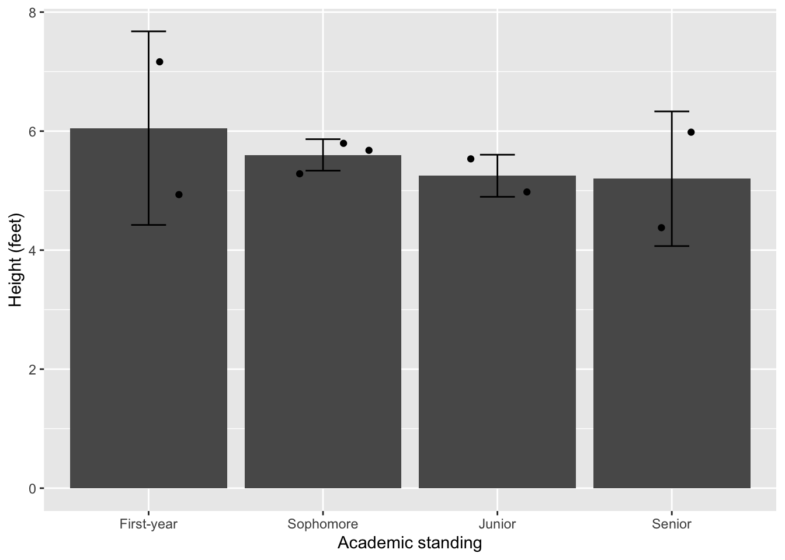
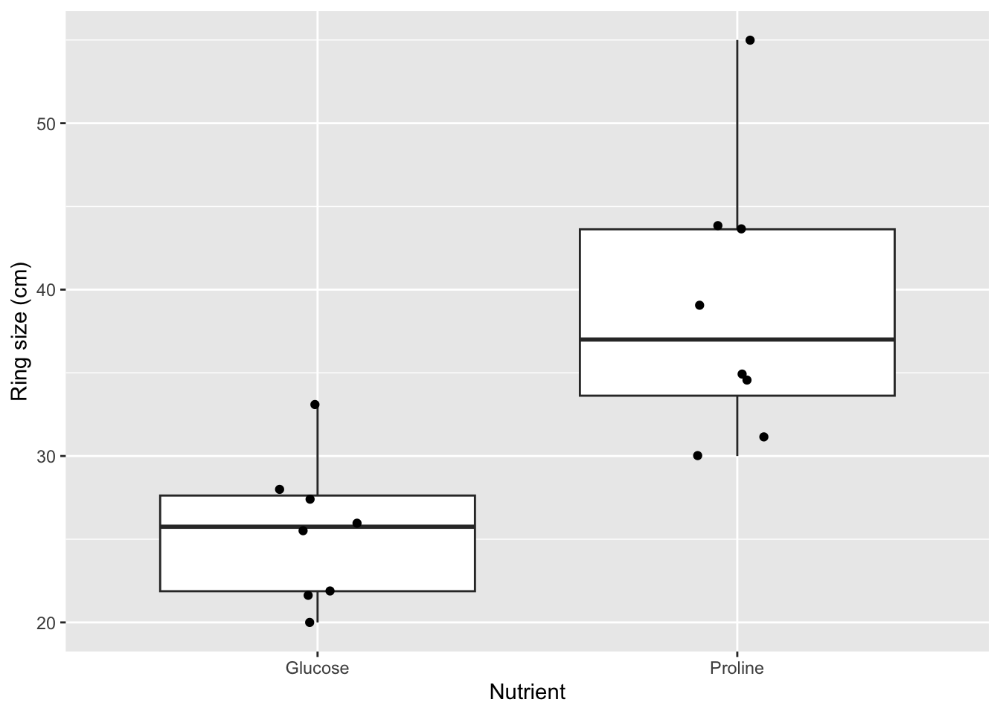
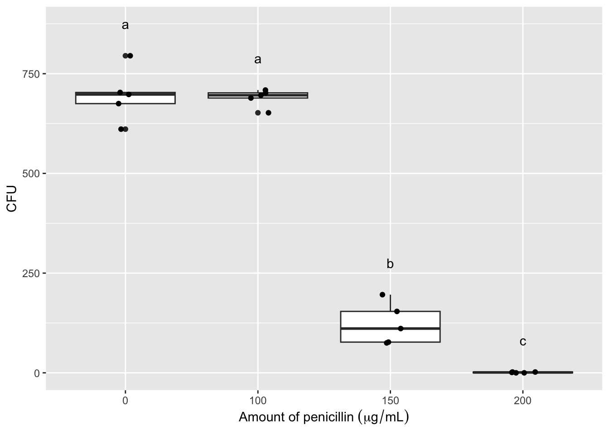
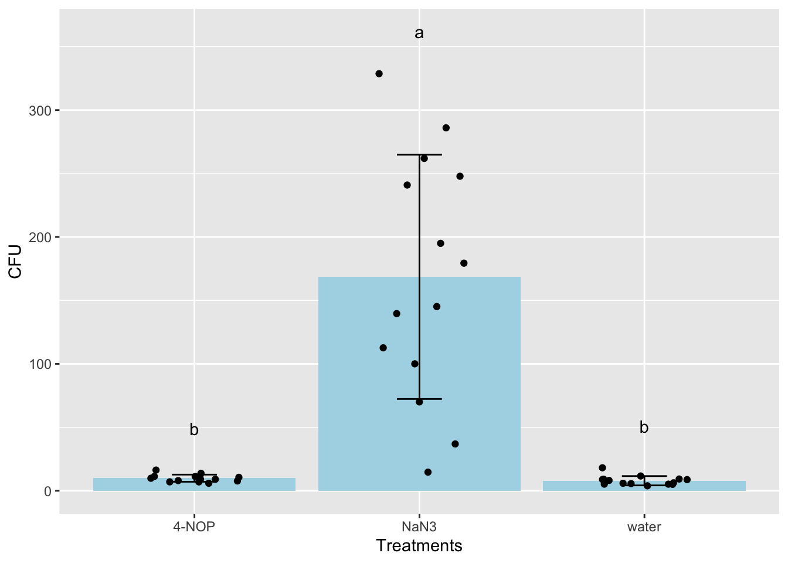
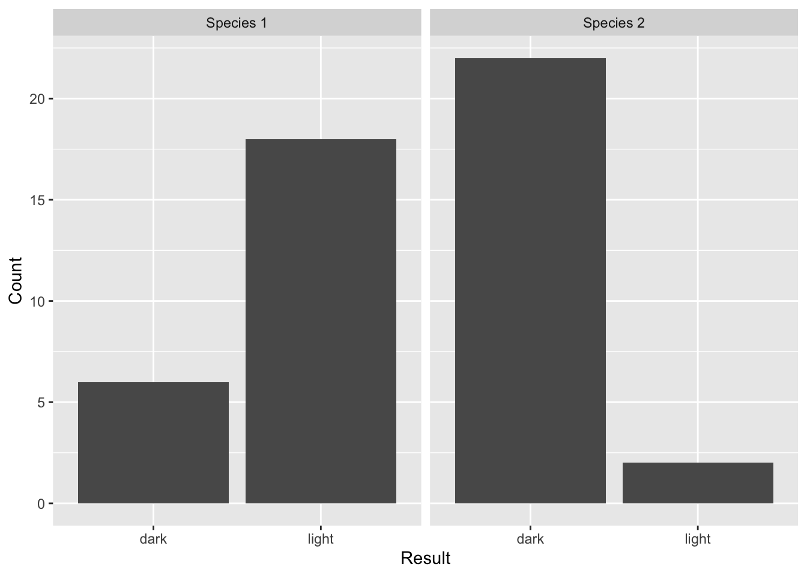
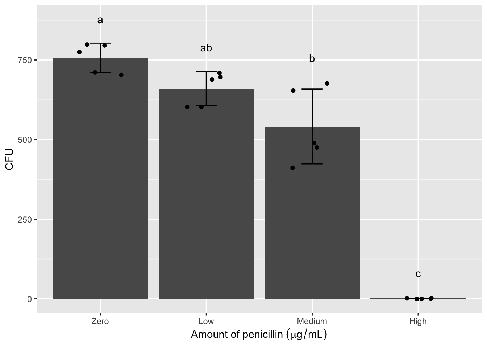

# Run these only once when you fist started the project:
install.packages("ggplot2")
install.packages("readxl")
install.packages("Rmisc")
install.packages("reshape")
install.packages("agricolae")
install.packages("multcomp")
#install.packages("tidyverse")Big Red Statistics in R
1 Overview of the scientific method
Biologists are interested in organisms (either unicellular or multicellular), populations, and/or communities in a variety of contexts, including their molecular biology, physiology, growth, development, behavior, ecology, and evolution. Regardless of their specific interest, biologists usually rely on the scientific method to obtain information if it is not already available in the scientific literature. The scientific method consists of several steps: 1) making observations, 2) asking a question, 3) forming a hypothesis, 4) designing and executing an experiment to test the hypothesis, 5) analyzing the data (including a statistical test, if appropriate), 6) interpreting the results, and 7) communicating the results (usually with a table or graph).
An experiment often involves one or more variables; these may be numeric variables, expressed as numbers (e.g. “2.4 cm”), nominal variables, expressed as named categories (e.g. “female” vs. “male”), or ordinal variables, expressed as positions (e.g. “first’’ vs. ``second” vs. “third”). The type of variable(s) determines the type of analysis that should be applied. In the case of numeric variables, the data may be continuous corresponding to an infinite range of values (e.g. as when measuring the length of a leaf) or discrete, corresponding to whole numbers (e.g. as when counting the number of stomata in a leaf).
In most cases, an experiment involves determining if a dependent variable is affected by an independent variable (e.g. as when counting the number of offspring – dependent - to determine if temperature – independent - has any effect on reproduction), or determining if there is a relationship between the two variables that may or may not involve cause and effect (e.g. as when you measure the weight of an organism to determine if it is related to the height of the organism).
The word “hypothesis” is used in slightly different ways in experimental design and statistics. Typically, when designing an experiment, the hypothesis is an educated guess about what you think might happen. It is generally expressed as a relationship between your two variables; e.g., plants that receive more light (independent variable) will grow taller (dependent variable). But when you go to analyze your data with statistics, you will use the term hypothesis with more nuance. Statistical tests help you determine if there is a significant relationship between your variables. When you do a statistical test, the default assumption is that there is NO relationship between your variables (amount of light has no impact on plant height). This default is called the “null hypothesis”. Thus, the null hypothesis is typically the opposite of the experimental hypothesis. The experimental hypothesis (referred to statistically as the alternative hypothesis) predicts a specific relationship between variables; the null hypothesis predicts no meaningful relationship between variables.
If the results of an experiment are consistent with the null hypothesis, and thus do not support the biologist’s experimental hypothesis, then the researcher must conclude that there is no evidence of a significant relationship between the variables. The experimental hypothesis is either rejected or it is modified and subjected to additional testing. If the results of an experiment are inconsistent with the null hypothesis, then there IS a significant relationship between the variables which may support the experimental hypothesis, but the hypothesis may be subjected to additional testing as it is replicated and refined.
An experiment should be controlled to ensure that the results are not attributed to confounding variables (as when the dependent variable is affected by something other than the independent variable). In some cases, the biologist might utilize an experimental group (e.g. individuals that receive a treatment) as well as a control group (e.g. individuals that do not receive a treatment). In other cases, the biologist might utilize a positive control (which should produce results) and/or a negative control (which should not produce results). In all cases, it is ideal to perform multiple, identical trials and to test multiple subjects (i.e. a large sample size) to ensure that there is a consistent outcome for the experiment.
There are additional ways to deal with confounding variables; these are by randomization and by matching. If you randomize the collection of your data, then you avoid the possibility that the effects you observe are due to confounding variables. For example, if I’m testing the effects of fertilizer on growth, but I chose all of my control plants in an area full of sunlight and all of my experimental plants in an area of heavy shade, then the differences in growth due to my fertilizer manipulation could be masked by the differences in sunlight. The remedy in this case is to randomly select control and experimental plants in both shady and sunny areas. Another way to control for confounding variables is through matching your control and experimental samples. As in the example above, if I placed a control and an experimental plant near each other (‘matching the samples’) in each habitat then the differences I observe are less likely due to differences in environmental variables that could confound my results.
A hypothesis becomes a theory if the results of many additional, independent tests continue to support it. A theory is an explanation that is supported by such a wide body of evidence that it is accepted as fact. Thus, biologists’ use of the term “theory” differs significantly from that of the general public who use the term when referring to speculation. One example of a theory is the theory of evolution, which is accepted as fact although there is still much for biologists to learn about natural selection and other mechanisms that result in a change in the relative frequency of alleles within a population over different time scales (i.e. micro versus macroevolution).
2 The importance of statistical tests
Biologists often apply a statistical test for a less biased approach to interpreting the results of an experiment. A statistical test will estimate the probability of producing the observed result under the null hypothesis. In particular, it will yield a p value, which is the probability of producing the observed result by chance when there is actually no relationship between variables (e.g., when the null hypothesis is true). The p value ranges from 0 to 1, with 0 being no chance of producing this data set by chance if there is no relationship, and 1 being a 100% chance of producing this data set when there is no relationship. If the p value is less than 0.05, then the null hypothesis is rejected and the results are referred to as “significant,” indicating that there is a significant relationship between the variables. It is important to note that the value is a probability and thus the conclusion you draw from the p value could still be inaccurate as in the case of false positives (referred to as Type I errors), in which the data deviate from the null hypothesis by chance, and false negatives (referred to as Type II errors), in which the data erroneously support the null hypothesis (often due to the sample size being limited). Let’s reiterate those definitions:
Type I error (false positive): for your sample, the p value is <.05 indicating a relationship between variables, but there would be no relationship if you measured a different or larger population.
Type II error (false negative): for your sample, the p value is >.05 indicating no relationship between variables, but there would be a relationship if you measured a different or larger population.
The threshold that marks significance for the p value is referred to as the α value. The choice of α = 0.05 is standard, but arbitrary. It is possible to select a different significance level prior to the experiment. However, if you increase your significance level, say to 0.1, you increase your chance of a false positive, and if you decrease your significance level, say to 0.01, you increase your chance of a false negative.

3 Displaying results with a graph
Biologists often display the results of an experiment in the form of a graph. There are two main types of graphs encountered in biology: bar graphs and line graphs. A bar graph is useful when your independent variable is categorical and your dependent variable is continuous. A line graph and/or a scatter plot are useful if both variables are continuous. Otherwise, they share many of the same features including a title and labels for the X and Y-axes (including the units of measurement, if any). The independent variable is plotted on the X-axis, while the dependent variable is plotted on the Y-axis. A graph should also have a legend that summarizes the results of the particular experiment. The amount of detail provided in a legend varies among biological disciplines; it is usually shorter (and written in active voice) for research involving organisms, populations, and communities, and it is usually longer (and written in passive voice) for research involving molecules and cells. In most cases, the last sentence reports the results of the statistical test.
3.1 Graphic Examples

Figure 1. Average nightly sleep varies with age. The average nightly sleep of 100 individuals of varying age was recorded and compared. Infants slept significantly more than any other age group, and teens also differed from all other groups. Adults and seniors did not show significant differences. Bars are mean; error bars are 1 SD. Groups were compared by one-way ANOVA (p<0.0001), followed by post-hoc Tukey-Kramer HSD; significant group differences are represented with letters (p<0.05).

Figure 2. Relationship between the height and diameter of black cherry (Prunus serotina) trees. There is a significant positive correlation between the height and diameter of 29 black cherry trees (linear regression, p<0.0001, R2 = 0.87, diameter =-11.2+1.93*height).
See How to graph in R below.
4 Descriptive statistics
Mean
The mean (\(\bar{X}\)) (often referred to as the average) corresponds to the sum of the measurements divided by the number of measurements (as in the case of 10, 40, 25, 35, and 40, which produce a mean of 30). In the case of an odd number of measurements, the median corresponds to the measurement in the middle when all of the measurements are sorted from lowest to highest (as in the case of 10, 40, 25, 35, and 40, which produces a median of 35). In the case of an even number of measurements, the median corresponds to the mean of the two measurements in the middle when all of the measurements are sorted from lowest to highest. Finally, the mode corresponds to the most common measurement (as in the case of 10, 40, 25, 35, and 40, which produces a mode of 40).
Standard deviation
The standard deviation (s) is a measure of the distribution of the data (i.e. extent of variation among different subjects) and weights each value by its distance from the mean. There is an increase in the standard deviation if there is a large distance of the values from the mean (as in the case of 10, 40, 25, 35, 40, which have a mean of 30). In contrast, there is a decrease in the standard deviation if there is a small distance (if any) of the values from the mean (as in the case of 25, 30, 35, 30, 30, which have the same mean of 30). The result for each group is summarized as the mean “plus or minus” the standard deviation (\(\bar{X}\) ± s). This gives you a lot of information about the data set. If someone describes a data set as the mean plus or minus one SD, they are giving you the range into which 68% of the data points fall. Mean ± 2 SD gives you the range of 95% of the data, and Mean ± 3 SD encompasses 99% of the data. Note that the standard deviation is sometimes represented by vertical lines known as error bars that extend from the mean in both an upward and downward direction.
Standard error
The standard error of the mean, or simply the standard error (SE) is another common way to state the variation around the mean. Instead of telling you about the range of the data set, it tells you the range of the “true” mean. If you added one sample to your study or took one sample away, the mean may change a little. So your mean is correct for your group of samples, but not necessarily for the whole population of all organisms that could have been in your study. SEM tells you that if you could have included every possible subject or sample - the mean probably would have been somewhere in this range. Once you have calculated the standard deviation of the mean (s), it is easy to calculate SE.

n = the number of samples or trials. This technique results in a smaller number than s offers, and thus often makes graphs with error bars look smaller. Whether to use s or SE in reporting your statistics and making error bars varies depending on the application, style and field. Be sure to find out what your instructor prefers for your assignments! And always state in your figure legends what your error bars are showing (e.g., “Bars show mean and error bars represent 1SD”).

Coefficient of variation
The coefficient of variation (CV) corresponds to the standard deviation divided by the mean and is useful when comparing the amount of variation for one variable among groups with different means.
The variance in data sometimes fits a normal distribution (i.e. bell curve on a graph); such data are subject to a parametric test. However, the variance in data sometimes does not fit a normal distribution; such data are subject to a non-parametric test (addressed in advanced coursework).
5 Start using R
5.1 Using R online or locally
5.1.1 Installation or sign up
R is a command line program where you interact with it through text ( the command line) instead of a graphical user interface (e.g., Windows, Excel, etc.). There are two options for running R. In both options, you will not interact directly with R. You will run R through an integrated environment called Posit online or Rstudio on your computer. Your instructor will let you know how you should use R for the class.
The online version of RStudio is called Posit. Sign up for an account here. The “Cloud Free” option will be sufficient. Do not choose the PLUS or other options. Your instructor will send you a link to get access to a shared class space, which has more memory and run time allocations than the “Cloud free” account.
If directed by your instructor, you can download RStudio and install it on your computer. Depending on the version of RStudio and R, the interface and commands could be slightly different from the online version. Follow the instructions here to download and install both R and RStudio.
5.1.2 Project setup and file transfer
Online option - Posit
For the online option, you will need to upload data to the cloud or download output files from the cloud. The benefit is that you can use R anywhere and on virtually any machine with internet (even a tablet)!
Once in the classroom space, you will see project assignments that your instructor has created for you. Your instructor will also have access to your assignments in this space. In some cases, your instructor may have created a template that includes pre-installed packages.
To create your own project on Posit, click New Project > New RStudio Project on the upper right (Figure 1). You should rename your project(s) as directed by your instructor.

Once the project is deployed, on the lower right panel, click the Upload button and choose the data file from your computer (Figure 2).

To download a file, check the box next to the file you want to export, click More > Export… and click Download (Figure 3).

Local option - RStudio
If you choose the local option, you should set up a project and a folder that is associated with this project where all files will be stored.
For example, create a folder on your desktop that is called “R_is_fun”. Start RStudio, click File > New Project… and select Existing Directory and browse to the folder R_is_fun.
Then click Create Project. Now you can access all files in the folder R_is_fun (without indicating the full pathname). Everything you saved in R will also appear in this folder.
5.1.3 The RStudio Interface
Let’s introduce what is being displayed in Posit and RStudio. Before we get started, click File > New File > R Script. This will result in a default four-panel interface Figure 4.

(A) The upper left is the R script panel. This is where you will write and save your R script or commands. The panel should be saved regularly, which serves as a record of all the commands that you have (or are planning) to run. For example, clicking File > Save and giving it the name
R_is_funwill save it asR_is_fun.Rin your working directory. The scripts here are not being read by R until you click theRunbutton on the top right.(B) The lower left is the R console, which is the innate command line interface of R. A command from the R script above will be displayed here when you click the
Runbutton, which is when R “reads” your command. Any output or error from R will also be displayed here. You could type your command directly here, but it will not be saved in the R script.(C) The upper right is the environment panel. Objects that are read or generated in R (such as dataframes) will be displayed here, along with any packages that you load and functions that you create.
(D) The lower right is the
Filespanel. It displays the files in your working directory. In Posit cloud, you will see files uploaded to the course space by your instructor. It also displays figures in thePlotstab if your commands result in graphical outputs. ThePackagestab indicates which packages are currently installed, while check marks indicate which ones are loaded in the library. TheHelptab displays the manual for each package and command.
For a more comprehensive introduction to RStudio, see here.
5.1.4 Using packages
Many packages are available to expand the basic functions of base R. This is similar to adding a plug-in or extension to your web browser.
To use these packages, you have to install them first. Then you can load the package as libraries.
We will install a few packages that will be used in this document. You may be asked to select a mirror to download the packages. Note: You will only need to run install.packages() ONCE for each Project.
Note that you can copy everything on the above “code chunk” using the copy button that appears when you hover your cruiser on the code chunk.

You can also install packaged from the Package tab on the lower right. Click Install and type the package name in the box (it will auto-complete for you to prevent typo).

Then, we will load these packages such that functions from these packages can be used. Note: You WILL need to run library() for each package EVERY TIME when you start your Project. But you will not need to install them again.
# Run these every time before you run anything else:
library("ggplot2")
library("readxl")
library("Rmisc")
library("reshape")
library("multcomp")
#library("tidyverse")6 Importing data into R
6.1 Preparing a .csv file from Excel
Your data should be entered and stored in spreadsheet programs such as Microsoft Excel before being imported into R. While R can read Excel files (A) such as .xls and .xlsx, data are typically saved into a simpler text format such as .csv (comma-separated values, B), where each row appears in a new line and each column is separated by a comma (,) (Figure 5). Note that that is a header line (the first row) that specify the column names.

A spreadsheet in Excel can be exported into .csv by clicking File > Save As… and selecting CSV in the drop-down manual under File Format.
Try doing this with name.xlsx which can be downloaded from here.
Place the .csv file into your project’s directory (e.g., R_is_fun) or upload it to your project in posit.cloud using the Files pane (see Project setup and file transfer).
Now, you should see the .csv file listed in the lower right panel of RStudio (Figure 6).

6.2 Loading a .csv file into R
Note that while the name.csv file is in the file panel, it’s not being loaded into R yet. It is merely present in the folder on the cloud (or your computer). To load the file into R, in the R script panel, type:
data_name = read.csv(file = "name.csv")
# In most command-line interfaces, texts after # are not read by the software and serve as notes.
# Here, read.csv() is a function.
# You can pass arguments inside the ().
# A function could have no argument or many arguments.
# In read.csv(), the first argument is called file and we pass "name.csv" to this argument.
# Since R knows the expected sequence of arguments (this is called positional argument), you could skip the name and just write:
# data_name = read.csv("name.csv")
# There are many other arguments in read.csv
# Type ?read.csv in the R Console to see the Help page
# For now, the default works (e.g., header = TRUE, sep = ",") because our file do have a header row and values are separated by ",".
# Because that R may read the file incorrectly if your csv file doesn't have a header line!The code above will load name.csv into R and save it as an object called data_name. Now the object data_name will appear in the environment panel (Figure 7).

In the environment panel, you can click on the object to open it in a new tab in the R script panel. Note that doing it actually sends a code to the R console as: View(data_name)
You can also view the object within the R console by calling it directly:
data_name First_name Height_ft Age Academic_standing
1 Denzel 5.8 24 Sophomore
2 Claire 5.0 20 Junior
3 Jack 7.2 29 First-year
4 Quisha 5.7 26 Sophomore
5 Carlos 4.9 24 First-year
6 Julio 5.3 28 Sophomore
7 Hiromi 6.0 26 Senior
8 Jiang 5.5 28 Junior
9 Isha 4.4 18 SophomoreYou can see that the file has loaded correctly. The 9 rows and 4 columns are present, as well as the column names.
The object is a dataframe, which is a class of R object that stores table. See here for other classes in R.
class(data_name)[1] "data.frame"You can get more information of a dataframe with:
str(data_name)'data.frame': 9 obs. of 4 variables:
$ First_name : chr "Denzel" "Claire" "Jack" "Quisha" ...
$ Height_ft : num 5.8 5 7.2 5.7 4.9 5.3 6 5.5 4.4
$ Age : int 24 20 29 26 24 28 26 28 18
$ Academic_standing: chr "Sophomore" "Junior" "First-year" "Sophomore" ...In some cases, you may need to add more arguments to read.csv(). Explore the documentation of this function.
?read.csvYou can also search for it in the Help tab in the file panel.
Another useful tip is that after you type a command, like aov(), you can hit the tab key and RStudio will show the possible arguments. Note also that RStudio will auto-complete the close bracket for you.
6.3 Loading an Excel file directly
You can also directly import an Excel file into R with the help of the readxl package.
library("readxl")If you saved your Excel file as name.xlsx, then the command below will read the first sheet of an Excel file by default.
read_xlsx(path = "name.xlsx")# A tibble: 9 × 4
First_name Height_ft Age Academic_standing
<chr> <dbl> <dbl> <chr>
1 Denzel 5.8 24 Sophomore
2 Claire 5 20 Junior
3 Jack 7.2 29 First-year
4 Quisha 5.7 26 Sophomore
5 Carlos 4.9 24 First-year
6 Julio 5.3 28 Sophomore
7 Hiromi 6 26 Senior
8 Jiang 5.5 28 Junior
9 Isha 4.4 18 Senior Note that the above code does not save or overwrite the object data_name because we did not do the data_name = read_xlsx(path = "name.xlsx"). It simply read and output the result into the R console.
7 Editing data in .csv and dataframe
Some times you would need to edit your data after loading it into R. There are two options.
(Beginner) Modify the .csv file that was uploaded to Posit.
Click on the .csv file in theFilespanel and clickView File. It will open the .csv file in the top left panel. You can modify any values there and save it. Once the editing is done, you must load the file into R again using read.csv().(Advanced) Modify the dataframe that was loaded into R.
It is a good practice to keep a record of all editing in your R script and to not modify the raw data file. To do this, we will modify the dataframe that is already loaded into R. Keep reading if you want to try this option.
After loading the data into R as a data frame, you can modify it using the command line.
We will use test_df as an example:
# Create a dataframe called test_df using the command data.frame()
# Inside data.frame(), we provide the name of a column with "Pred = " or "Response= " and the value of each row with c("A","A", "B",'B') or 1:4.
# Notes:
# 1:4 is the same as c(1, 2, 3, 4)
# For non-numeric values inside c(), we need to add "" around the characters.
# The newline is solely for better display purpose. You can run this in a single line as test_df = data.frame(Pred = c("A","A", "B",'B'), Response = 1:4)
test_df = data.frame(Pred = c("A","A", "B",'B'),
Response = 1:4)
# Display the dataframe test_df
test_df Pred Response
1 A 1
2 A 2
3 B 3
4 B 47.1 Changing column names
Option 1. You can change the column name after knowing the index (position) of the name that needs to be changed.
For example, we want to change Pred to Predictor.
# Display the column names of test_df to check the index of Pred
# Index refer to the position of an element in a vector (or list)
names(test_df)[1] "Pred" "Response"# Since "Pred" is the first element in names(test_df), we can use the index in the next command to change it.
names(test_df)[1] = "Predictor"
# Display test_df to check
test_df Predictor Response
1 A 1
2 A 2
3 B 3
4 B 4Option 2. We can write one line to change the name without knowing what index it is. It’s useful if you have a larger data frame with lots of columns.
For example, we want to change Response to Values.
names(test_df)[names(test_df)=="Response"] = "Values"
test_df Predictor Values
1 A 1
2 A 2
3 B 3
4 B 4# Breaking down the one-liner:
# names(test_df)=="Response" # gives a True/False logical vector
# names(test_df)[...] # call what's inside the square bracket
# names(test_df)[names(test_df)=="Response"] # So this calls what's TRUE in the logical vector, which is the name "Response".
# The last command (= "Values" ) assign a new name for what's on the left side of the equal sign.There are many other ways to do it. You can explore on your own!
7.2 Changing values in a data frame
This is best done by knowing the index of the column and row of the cell that needs to be changed.
For example, if we want to change the 3 to 300 in test_df:
# We can first take a look at the dataframe
View(test_df)# Since we know that it's in the third row and the second column, we can do this:
test_df[3,2] = 300
test_df Predictor Values
1 A 1
2 A 2
3 B 300
4 B 4# Note that indexing for dataframe goes from row to column in R
# R start counting from 1. (While other programming language, like Python, starts at 0.)
# So [3,2] means row 3 and column 27.3 Combining text from two columns
For example, we have a dataframe called test_df2 and want to combine the columns Variable1 and Variable2 into a new column.
# Create test_df2
test_df2 = data.frame(Variable1 = c("Cold","Cold",'Hot',"Hot"),
Variable2 = c("North","East",'South',"West"),
Response = 1:4)
# Display test_df2. It has three columns.
test_df2 Variable1 Variable2 Response
1 Cold North 1
2 Cold East 2
3 Hot South 3
4 Hot West 4# Create a new column called Treatment in test_df2
# Do that by pasting the values from each row of Variable1 and Variable1, and separating them with " and ".
# Note that the spaces flanking "and" is needed.
test_df2$Treatment = paste(test_df2$Variable1, test_df2$Variable2, sep = " and ")
# Note: avoid using sep = "&" as it may cause an error!
# Display test_df2. It should have the fourth column.
test_df2 Variable1 Variable2 Response Treatment
1 Cold North 1 Cold and North
2 Cold East 2 Cold and East
3 Hot South 3 Hot and South
4 Hot West 4 Hot and West8 How to graph in R
8.1 How to Construct a Bar Graph
We will use the dataframe that we have loaded before: data_name and the package ggplot2.
We will plot the average Height_ft across different Academic_standing and add an error bar that represents the standard deviation (or standard error if needed).
# We will first have R calculate the mean, sd, and se by group. summarySE is a function in Rmisc.
Height_by_Academic_summary = summarySE(data = data_name,
measurevar = "Height_ft",
groupvars = "Academic_standing")
# Take a look at Height_by_Academic_summary
Height_by_Academic_summary Academic_standing N Height_ft sd se ci
1 First-year 2 6.05 1.6263456 1.1500000 14.612135
2 Junior 2 5.25 0.3535534 0.2500000 3.176551
3 Senior 1 6.00 NA NA NaN
4 Sophomore 4 5.30 0.6377042 0.3188521 1.014730# We will also convert Height_ft to be an ordered factor so that it will plot accordingly to the levels specified here, instead of alphabetically
Height_by_Academic_summary$
Academic_standing_order = factor(Height_by_Academic_summary$Academic_standing,
ordered = T,
levels = c("First-year", "Sophomore", "Junior", "Senior"))# We can then use Height_by_Academic_summary to build a barplot
ggplot(data = Height_by_Academic_summary, aes(x = Academic_standing_order, y = Height_ft)) +
# The line above is only setting up the dataset and aesthetic mappings
geom_bar(stat="identity", fill="lightblue", color = "black") +
# The line above adds a layer of bar plot
geom_errorbar(aes(ymin=Height_ft-sd, ymax=Height_ft+sd), width=.2,
position=position_dodge(.9)) +
# The line above adds a layer with the error bar
labs(x = "Academic standing", y = "Height (feet)") # The last line edit the axis labels.
# You will need at least the first two lines (connected by +) to build a ggplot.
# ggplot(data = Height_by_Academic_summary, aes(x = Academic_standing_order, y = Height_ft)) + geom_bar(stat="identity")
# You could save the first two lines as an object and add additional layers afterward:
# p = ggplot(data = Height_by_Academic_summary, aes(x = Academic_standing_order, y = Height_ft)) + geom_bar(stat="identity")
# p + geom_errorbar(aes(ymin=Height_ft-sd, ymax=Height_ft+sd), width=.2, position=position_dodge(.9)) + labs(x = "Academic standing", y = "Height (feet)") To be transparent about the raw data, we can overlap the data points on the bar graph.
# It requires getting the raw data from data_name in geom_point()
ggplot(data = Height_by_Academic_summary, aes(x = Academic_standing_order, y = Height_ft)) +
geom_bar(stat="identity") +
geom_errorbar(aes(ymin=Height_ft-sd, ymax=Height_ft+sd), width=.2,
position=position_dodge(.9)) +
labs(x = "Academic standing", y = "Height (feet)") +
geom_point(data = data_name, aes(x = Academic_standing, y = Height_ft), position = "jitter")
Another good way to display the same data is to use a boxplot.
ggplot(data = data_name, aes(x = Academic_standing, y = Height_ft)) +
geom_boxplot(outlier.colour = "grey", fill="lightblue") +
# outlier color is set to be grey to distinghish it from the raw data points displayed by geom_jitter below.
geom_jitter(width = 0.1)
8.2 How to Construct a Scatter Plot with a Linear Fit
We will use the data frame that we have loaded before: data_name and the package ggplot2.
We will plot Age as the predictor (independent) variable on the X axis and Height_ft as the response (dependent) variable on the Y axis. A linear regression line will be added.
ggplot(data = data_name, aes(x = Age, Height_ft)) +
geom_point() +
stat_smooth(method = "lm", se = F, color = "red") +
labs(y = "Height (feet)")`geom_smooth()` using formula = 'y ~ x'
# Note: You will need to run a linear regression to get the values of the y-intercept and slope.9 How to generate descriptive statistics
Let’s say that you measure the length of each of 12 seashells. Here are the instructions for determining the mean and standard deviation using R:
Follow the instructions in the previous section to enter your continuous data into a new dataframe called seashells. In this case your dependent variable is Length_cm of the seashells.
For example, you can first enter your data into Excel (Figure 8), save it as seashells.csv, and upload that to your project’s directory in Posit.

Then you can run this to load it as a dataframe called seashells
seashells = read.csv("seashells.csv")Alternative, you also run this code to manually enter the data:
seashells = data.frame("Length_cm" = c(3, 4.5, 3.1, 4.2, 4.4, 4, 3.6, 3.7, 3.1, 2.8, 4.3, 5))Either way, your data should look like this:
seashells Length_cm
1 3.0
2 4.5
3 3.1
4 4.2
5 4.4
6 4.0
7 3.6
8 3.7
9 3.1
10 2.8
11 4.3
12 5.0You can check whether Length_cm is continuous (i.e, numeric).
class(seashells$Length_cm)[1] "numeric"Generate a quick histogram of the data, if you have a continuous variable.
hist(seashells$Length_cm)
# Note: This is NOT a publishable figure because the axis labels and title are not in the correct format. It should not be used in your assignments or presentations in its current format. Generate basic summary statistics.
summary(seashells$Length_cm) Min. 1st Qu. Median Mean 3rd Qu. Max.
2.800 3.100 3.850 3.808 4.325 5.000 Generate standard deviation (SD).
sd(seashells$Length_cm)[1] 0.7012435Generate standard error (SE) using the formula
sd(seashells$Length_cm)/sqrt(length(seashells$Length_cm)) [1] 0.2024316Generate standard deviation (SD) and standard error (SE) using the summarySE() function in the package Rmisc:
library("Rmisc")
# You don't need to write this every time if you have loaded the library at the beginning.
summarySE(seashells, "Length_cm") .id N Length_cm sd se ci
1 <NA> 12 3.808333 0.7012435 0.2024316 0.4455489You can also calculate the means and standard deviations of different groups in R at the same time. Let’s say you measured 12 shells again, but this experiment you used 3 different species. You can calculate the means and standard deviations of the different species by inputting your data in the following way:
# We will add another column to the dataframe
seashells$Species = c(rep("Species1", 4), rep("Species2", 4), rep("Species3", 4))
# To view the data:
seashells Length_cm Species
1 3.0 Species1
2 4.5 Species1
3 3.1 Species1
4 4.2 Species1
5 4.4 Species2
6 4.0 Species2
7 3.6 Species2
8 3.7 Species2
9 3.1 Species3
10 2.8 Species3
11 4.3 Species3
12 5.0 Species3Then use summarySE from Rmisc
summarySE(data = seashells,
measurevar = "Length_cm",
groupvars = "Species", ) Species N Length_cm sd se ci
1 Species1 4 3.700 0.7615773 0.3807887 1.2118394
2 Species2 4 3.925 0.3593976 0.1796988 0.5718819
3 Species3 4 3.800 1.0295630 0.5147815 1.6382645With this data, you can make a table to summarize descriptive statistics of seashell lengths from three different species (Figure 9).

10 Inferential statistics
Step One: Figure out what statistic you should use!
How do you do that? First, you should be able to clearly write out your experimental question, your hypothesis, and identify your dependent and independent variables. Go ahead – do it now – I’ll wait.
Once you have your variables identified, determine if they are continuous (measurement) data or nominal (categorical) data. Now you can use the chart below to figure out which type of statistic is right for you (Figure 10). Note that each combination of variable types also has a type of graph or table that is typically used to display the data! Instructions for how to run each stat and make each figure are given in the sections that follow.

10.1 Linear regression
10.1.1 Simple linear regression
A linear regression is employed to determine if there is a relationship between two variables, X and Y when both variables are continuous (measurement) type data. A p value that is less than 0.05 indicates that there is less than 5% probability that the association you observe is due to chance under the null hypothesis. In practice this means you can reject the null hypothesis and conclude that something other than chance is producing the relationship that you observe. This statistical test will also indicate the direction and magnitude of the relationship. The direction is inferred from the slope of the line (m), while the magnitude or strength of the relationship is inferred from the coefficient of determination (R2). If R2 = 1, then the line is a perfect “fit,” meaning that Y can be predicted from X (or vice versa) using the equation of the line (y = mx + b). If R2 < 1, then the line is not a perfect “fit,” meaning that only a proportion of Y can be predicted from X (or vice versa) using the equation of the line (y = mx + b). For example, if R2 = 0.94, then 94% of the variation in Y can be explained by X. Note that the R2 and line equation are ONLY relevant if there is a significant relationship (p < 0.05). If there is no significant relationship, then the line and its equation are arbitrary and not meaningful. Likewise, you can’t describe the magnitude of a relationship (R2) if there is no relationship.
Let’s say that want to determine if temperature is related to chirp rates of the snowy tree cricket. You measure the temperature and the rate of 10 chirping crickets at those respective temperatures. Since crickets are ectoderms and their metabolism is affected by their external environment, we should expect to see an increase in chirping as temperature increases.
Manually create the dataframe chirps in R by running the code below. We have two continuous variables temperature and chips_per_min.
# Create a dataframe called chirps using the command data.frame()
# Inside data.frame(), we provide the name of a column with "temperature = " and the value of each row with c().
chirps = data.frame(temperature = c(31, 22, 34, 29, 27, 24, 21, 29, 26, 29), chirps_per_min = c(79, 64, 79, 73, 69, 62, 59, 70, 64, 68))
# Display the dataframe chirps
chirps temperature chirps_per_min
1 31 79
2 22 64
3 34 79
4 29 73
5 27 69
6 24 62
7 21 59
8 29 70
9 26 64
10 29 68In R the lm function can fit a number of linear models, including linear regression.
The code below creates a linear model (lm_HA) to predict chirps_per_min (the response or dependent variable) by temperature (the predictor or independent variable):
lm_CT = lm(formula = chirps_per_min ~ temperature, data = chirps)
lm_CT
Call:
lm(formula = chirps_per_min ~ temperature, data = chirps)
Coefficients:
(Intercept) temperature
26.389 1.556 Calling lm_CT shows the coefficients for intercept and slope (under temperature) of the linear regression. But we can get much more out of lm_CT using summary().
summary(lm_CT)
Call:
lm(formula = chirps_per_min ~ temperature, data = chirps)
Residuals:
Min 1Q Median 3Q Max
-3.5000 -1.6667 -0.1667 1.2778 4.3889
Coefficients:
Estimate Std. Error t value Pr(>|t|)
(Intercept) 26.3889 6.1375 4.300 0.002617 **
temperature 1.5556 0.2234 6.962 0.000117 ***
---
Signif. codes: 0 '***' 0.001 '**' 0.01 '*' 0.05 '.' 0.1 ' ' 1
Residual standard error: 2.714 on 8 degrees of freedom
Multiple R-squared: 0.8583, Adjusted R-squared: 0.8406
F-statistic: 48.47 on 1 and 8 DF, p-value: 0.000117Under “Coefficients”, it shows a t-test of whether the intercept and slope (temperature) is significantly different from zero.
In the last three lines, it shows:
Residual standard error: lower values suggest better fit (i.e., less distance between the data point and the predicted line).
Degrees of freedom: the maximum number of logically independent values.
Multiple R-squared: the percentage of the response variable variation that a the model explains.
Adjusted R-squared: R-squared adjusted for the number of terms in the model. Use this to compare between models with different number of predictor variables.
Statistics of a F-test that evaluates the fit of the model.
Although the F-test is at the end, it should be examined first to determine whether the linear model fits the data if you have multiple response variables. Only when the model is well fitted, should you further interpret the significance of the intercept and slope.
In this example, the linear regression is significant because the p-value of the F test is lower than 0.05 (p = 0.000117), so we can continue to examine the intercept and slope.
The slope is 1.5556 (under “Estimate” in “Coefficient”) and the t-test indicates that it is significantly different from zero (p = 0.000117). Note that this p-value is the same as that of the F-test only when there is a single predictor variable. In multiple regression, there will be separate t-tests for each predictor variable.
Therefore we can write a statement to summarize the result and provide the statistical support:
There is a positive relationship between height and age (slope = 1.556, F = 48.47, d.f. = 1 and 8, p = 0.0001).
10.1.2 Visualization: scatter plot
Visualization for linear regression is shown above in How to Construct a Scatter Plot with a Linear Fit. For this dataframe chirps, we can do:
ggplot(data = chirps, aes(x = temperature, y = chirps_per_min)) +
geom_point() +
geom_smooth(method = lm, se = F, color = "red") +
labs(y = "Chirps per minute", x = expression("Temperature " ( degree*C)))`geom_smooth()` using formula = 'y ~ x'
Figure 6. The relationship between air temperature and chirps per minute of snowy tree crickets. Chirps were counted for 10 crickets at different temperatures. There was a significant positive relationship between temperature and cricket’s chirps per minute (linear regression, p<0.0001, R2 = 0.85, y =-26.2+1.57*x).
Always do the following (regardless of the result): Make sure your axes are labeled properly in Title Case and include units of measure. In the figure legend, you should report the statistic just as you do for other stats, by naming the type of stat and giving the p-value.
If the p-value is significant, do the following: show the linear fit on the graph, and report the line equation and the R2 value in the legend. Describe the relationship in words.
If the p-value is not significant: this means the line fit is not meaningful, so just show the scatter plot without the linear fit and report only the p-value, not the line equation or the R2. State that there was no relationship.
ggplot(data = chirps, aes(x = temperature, y = chirps_per_min)) +
geom_point() +
labs(y = "Chirps per minute", x = expression("Temperature " ( degree*C)))Some authors or instructors prefer to display an insignificant trend with a dashed line:
ggplot(data = chirps, aes(x = temperature, y = chirps_per_min)) +
geom_point() +
geom_smooth(method = lm, se = F, color = "grey", linetype = "dashed") +
labs(y = "Chirps per minute", x = expression("Temperature " ( degree*C)))`geom_smooth()` using formula = 'y ~ x'
10.2 T-test
10.2.1 Two sample t test
A t-test is used when the independent variable is nominal and has exactly two categories (such as an experimental group and a control group) and the dependent variable consists of continuous (measurement) data. If the p value is less than 0.05, then the statistical value you calculate (the ‘t- value’) has a low probability (less than 5%) of occurring by chance if the null hypothesis is true. What this means in practical terms is that you have evidence that something other than the null hypothesis is occurring - there is a relationship between your two variables! - and you can reject your null hypothesis and describe the relationship (in this case a relationship between the independent variable “experimental group” and the dependent variable “outcome measure” can also be described as a difference in outcome between groups). In contrast, if the p value is more than 0.05, then the biologist fails to reject the null hypothesis that there is no significant difference between the two groups. In practical terms this means that the scientist has no evidence that the means are different.
Let’s say that you want to test if a fertilizer has a significant effect on the growth of plants. You measure the height of 10 plants, 5 grown with just soil and 5 grown with soil and added fertilizer. Both groups are grown for the same length of time. Here are the instructions for performing a t-test (for comparing two groups) using R:
Run this code to generate the data manually.
# Make a dataframe called fertilizer
fertilizer = data.frame("Treatment" = c(rep("Soil", 5),
rep("Soil+fertilizer", 5)),
"Plant_height_cm" = c(10.5, 13, 9, 11, 14,
17, 18.5, 20, 16, 17.5))
# Note that the new lines are only used for a better display. They are not interpreted by R.# rep("Soil", 5) repeats "Soil" five times.
# It's the same as c("Soil", "Soil", "Soil", "Soil", "Soil")
# Display the dataframe:
fertilizer Treatment Plant_height_cm
1 Soil 10.5
2 Soil 13.0
3 Soil 9.0
4 Soil 11.0
5 Soil 14.0
6 Soil+fertilizer 17.0
7 Soil+fertilizer 18.5
8 Soil+fertilizer 20.0
9 Soil+fertilizer 16.0
10 Soil+fertilizer 17.5Notice that there are only 2 nominal variables (soil and soil+fertilizer). If there are more than 2 nominal variables an ANOVA must be used to analyze the data.
unique(fertilizer$Treatment)[1] "Soil" "Soil+fertilizer"To test whether Plant_height_cm is different between Treatment , in other word, whether Treatment affect Plant_height_cm, we will use t.test():
t.test(Plant_height_cm ~ Treatment, data = fertilizer, alternative = "two.sided", var.equal = TRUE)
Two Sample t-test
data: Plant_height_cm by Treatment
t = -5.6014, df = 8, p-value = 0.0005094
alternative hypothesis: true difference in means between group Soil and group Soil+fertilizer is not equal to 0
95 percent confidence interval:
-8.893614 -3.706386
sample estimates:
mean in group Soil mean in group Soil+fertilizer
11.5 17.8 The argument alternative can also be “greater” or “less” if you have an a priori reason to test a directional difference between groups.
In this case, the p-value is 0.0006475. We failed to reject the null hypothesis that Treatment can affect Plant_height_cm. Hence we can write a summary statement like:
Treatment group does not significantly affect plant height (t = -5.601, d.f. = 7.476, p = 0.001)
10.2.2 Visualization: Boxplot
You can plot the continuous variable from two groups in a number of ways.
One way is to use a boxplot:
ggplot(data = fertilizer, aes(x = Treatment, y = Plant_height_cm)) +
geom_boxplot(outlier.colour = "grey") +
geom_jitter(width = 0.1) +
labs(x = "Treatment", y = "Plant height (cm)")
10.3 ANOVA
10.3.1 Global ANOVA test
An ANOVA is used in a similar circumstance as a t-test: nominal independent variable and continuous dependent variable, but when there are three or more categories for the independent variable (perhaps you tried multiple experimental treatments). If the p value is more than 0.05, then the biologist fails to reject the “null hypothesis” that there is no significant difference between any pairs of groups. If the p value is less than 0.05, then the statistical value you calculate (the ‘F-value’) has a low probability (less than 5%) of occurring by chance if the null hypothesis is true. In this case, the null hypothesis is rejected, and the biologist must then perform additional “post-hoc” tests to determine exactly which pair(s) of groups are significantly different from one another. In the JMP output, groups with the same letters (such as A and A) are not significantly different from one another, while groups with different letters (such as A and B) are significantly different from one another (refer to sample graph). In the case of a significant difference, biologists must determine if the outcome is what they expected or is the opposite of what they expected.
Let’s say you want to measure the effectiveness of penicillin in disrupting E. coli growth. Penicillin is a common antibiotic that disrupts cell wall formation thus halting cellular division in many microbes. In order to see which dose is most effective, we will test 3 different concentrations as well as a control (no penicillin). The response variable in this case is measured in CFU (colony forming unit). This colony shows how many single cells survived to divide into a visible colony. Here are the instructions for performing an ANOVA (for comparing more than 2 groups) in R:
# Run this code to generate the data manually.
penicillin = data.frame(
Penicillin_conc = c(rep(0,5), rep(100, 5), rep(150, 5), rep(200,5)),
CFU = c(795, 611, 703, 698, 675, 652, 696, 702, 689, 709, 196, 75, 111, 77, 154, 2, 0, 2, 1, 0))
# We will adjust the column Penicillin_conc to be a ordered factor
penicillin$Penicillin_conc = factor(penicillin$Penicillin_conc, ordered = T, levels = c(0, 100, 150, 200))
penicillin Penicillin_conc CFU
1 0 795
2 0 611
3 0 703
4 0 698
5 0 675
6 100 652
7 100 696
8 100 702
9 100 689
10 100 709
11 150 196
12 150 75
13 150 111
14 150 77
15 150 154
16 200 2
17 200 0
18 200 2
19 200 1
20 200 0To test whether Penicillin_conc affects CFU, we will build the model using aov(), then use summary() to show the full results:
p_anova_model = aov(formula = CFU ~ Penicillin_conc, data = penicillin)
summary(p_anova_model) Df Sum Sq Mean Sq F value Pr(>F)
Penicillin_conc 3 2029149 676383 356.4 7.4e-15 ***
Residuals 16 30362 1898
---
Signif. codes: 0 '***' 0.001 '**' 0.01 '*' 0.05 '.' 0.1 ' ' 1Note that the results is similar to the F-test in the last part of linear regression, because ANOVA and regression are both linear models. But in ANOVA, we don’t have predictions of slope and intercepts.
In this case, since the p-value is <0.05. We rejected the null hypothesis that Penicillin_conc has an effect on CFU Therefore, we can write a summary statement to say:
Penicillin concentration significantly affects CFU (F = 356.4, d.f. = 3 and 16, p < 0.0001)
10.3.2 Post hoc test
If the p value is below 0.05, you must run post hoc tests to compare the means. We can compare all means using Tukey HSD to obtain information about which pair(s) of species are significantly different from one another.
TukeyHSD(p_anova_model) Tukey multiple comparisons of means
95% family-wise confidence level
Fit: aov(formula = CFU ~ Penicillin_conc, data = penicillin)
$Penicillin_conc
diff lwr upr p adj
100-0 -6.8 -85.62304 72.02304 0.9945014
150-0 -573.8 -652.62304 -494.97696 0.0000000
200-0 -695.4 -774.22304 -616.57696 0.0000000
150-100 -567.0 -645.82304 -488.17696 0.0000000
200-100 -688.6 -767.42304 -609.77696 0.0000000
200-150 -121.6 -200.42304 -42.77696 0.0022097This test compares the mean of each group to determine which ones are significantly different from each other. p adj indicates the Tukey adjusted p values for each pair. This shows us that all the means of E. coli growth are different except for the 0 and 100 ug/mL concentrations. These differences can be indicated with letters on your final figure.
To generate the letter groupings, we need to run the same test with a different library:
library(agricolae)
hsd = HSD.test(p_anova_model, trt = "Penicillin_conc", group = T)
hsd$statistics
MSerror Df Mean CV MSD
1897.6 16 377.4 11.54251 78.82304
$parameters
test name.t ntr StudentizedRange alpha
Tukey Penicillin_conc 4 4.046093 0.05
$means
CFU std r se Min Max Q25 Q50 Q75
0 696.4 66.18006 5 19.48127 611 795 675 698 703
100 689.6 22.27779 5 19.48127 652 709 689 696 702
150 122.6 52.08935 5 19.48127 75 196 77 111 154
200 1.0 1.00000 5 19.48127 0 2 0 1 2
$comparison
NULL
$groups
CFU groups
0 696.4 a
100 689.6 a
150 122.6 b
200 1.0 c
attr(,"class")
[1] "group"Under $groups, the letters indicate the CFU at 0 and 100 ug/mL of penicillin are not different from each other as they are both in group “a”. But 150 ug/ml and 200 ug/ml are both significantly different from both 0 and 100 ug/mL as they are in different letter groups b and c, respectively.
10.3.3 Visualization: box plot and bar plot
Similar to the t-test, we can plot the data used for ANOVA using a boxplot:
ggplot(data = penicillin, aes(x = Penicillin_conc, y = CFU)) +
geom_boxplot() +
geom_jitter(width = 0.1, height = 0) +
labs(x = expression("Amount of penicillin " (mu*g/mL)))
We can incorporate results from the post hoc test to the figure. There are two ways to do it:
- (Beginner) Save the figure and use Words, PowerPoints, Preview (Macs) or other software to add the post hoc letter labels from
HSD.test(). - (Advanced) We can write some codes to do so. Continue reading:
# We can use the letters from hsd to build a dataframe to help us label the plot.
# temp_label will have the data from hsd$means and the group letters from hsd$groups.
temp_label = merge(hsd$means, hsd$groups, by = c("row.names", names(hsd$means)[1]))
# We need to have a column called Penicillin_conc so the ggplot can refer to this column. Instead of manually specifying the column name, we will retrieve it from hsd$parameters$name.t
names(temp_label)[1] = hsd$parameters$name.t
temp_label Penicillin_conc CFU std r se Min Max Q25 Q50 Q75 groups
1 0 696.4 66.18006 5 19.48127 611 795 675 698 703 a
2 100 689.6 22.27779 5 19.48127 652 709 689 696 702 a
3 150 122.6 52.08935 5 19.48127 75 196 77 111 154 b
4 200 1.0 1.00000 5 19.48127 0 2 0 1 2 c# Then we can add the labels to the ggplot
ggplot(data = penicillin, aes(x = Penicillin_conc, y = CFU)) +
geom_boxplot() +
geom_jitter(width = 0.1, height = 0) +
labs(x = expression("Amount of penicillin " (mu*g/mL))) +
geom_text(data = temp_label, aes(x = Penicillin_conc,
y = Max+max(Max)*0.1,
label = groups))
# geom_text looks into temp_label to get the group labels and calculate a y location to place the label based on the Max values.Similar to How to Construct a Bar Graph, we can create a bar plot with error bars and the post hoc letter groupings.
penicillin_summary = summarySE(data = penicillin, measurevar = "CFU", groupvars = "Penicillin_conc")
ggplot(data = penicillin_summary, aes(x = Penicillin_conc, y = CFU)) +
geom_bar(stat="identity") +
geom_errorbar(aes(ymin=CFU-sd, ymax=CFU+sd), width=.2,
position=position_dodge(.9)) +
labs(x = expression("Amount of penicillin " (mu*g/mL))) +
geom_jitter(data = penicillin, aes(x = Penicillin_conc, y = CFU), width = 0.2, height = 0) +
geom_text(data = temp_label, aes(x = Penicillin_conc,
y = Max+max(Max)*0.1,
label = groups))
10.4 Two types of Chi-square (X2) tests
Chi-Square tests are used when both the dependent and independent variables are nominal.
10.4.1 Chi-square - Goodness of Fit test
The Goodness of Fit test is used to determine if the observed result (i.e. collected during an experiment) is significantly different than the “expected” result (i.e. that based on the laws of probability). It involves calculating the degrees of freedom (DF), which corresponds to the following equation: DF = (C – 1) where C is the number of categories. It also involves calculating the Chi-square value (X2), which corresponds to the following equation: X2 = \(\sum{D^2/E}\) where D is the difference between the observed result (O) and expected result (E). The biologist determines if the X2 value is less than the “critical” X2 value for an experiment with a particular DF to determine if there is a significant difference (p value < 0.05) between the observed and expected result.
 .
.
Let’s say that you have crustaceans and test their preference for a light or dark environment. In this example there is only ONE variable: the observed preference (are they in the light or dark when you check on them?). You want to see if the distribution of crustaceans is random (roughly 50% in the light and 50% in the dark because they have no preference and distribute according to the laws of probability) OR if the distribution is non-random because they prefer either dark or light.
The null hypothesis for this test is that the variable of interest (light/dark environment) will have no impact on the distribution of the data. In other words, the null hypothesis assumes a random distribution, which means the observed is no different from the expected. If p>0.05, you accept the null.
A significant result (p<0.05) means the distribution of your observed data is different than expected; it is non-random.
Chi-square - Goodness of Fit test
The goodness of fit Chi-square test is used to test whether the distribution of a categorical variable is significantly different than an “expected” distribution. There is no predictor in this case.
For example, in a species of crustacean, we counted the number of individuals that prefer a light and a dark treatment. We may expect the light:dark ratio to be 1:1 and we can test it with the chi-square goodness of fit test.
We will create a file that may be similar to how your raw data will look like in a “long form”:
crust_sp1 = data.frame(Crustacean = "Species 1", Result = c("light", "light", "dark", "light", "light", "light", "light", "light", "dark", "dark", "light", "light", "light", "light", "light", "light", "light", "dark", "dark", "dark", "light", "light", "light", "light"))
crust_sp1 Crustacean Result
1 Species 1 light
2 Species 1 light
3 Species 1 dark
4 Species 1 light
5 Species 1 light
6 Species 1 light
7 Species 1 light
8 Species 1 light
9 Species 1 dark
10 Species 1 dark
11 Species 1 light
12 Species 1 light
13 Species 1 light
14 Species 1 light
15 Species 1 light
16 Species 1 light
17 Species 1 light
18 Species 1 dark
19 Species 1 dark
20 Species 1 dark
21 Species 1 light
22 Species 1 light
23 Species 1 light
24 Species 1 lightWe can convert this into the “short form” :
crust_table = table(crust_sp1[,"Result"])
crust_table
dark light
6 18 We can then test whether the observed distribution of Result is equally distributed among the two groups (i.e., 1:1) using chisq.test().
chisq.test(x = crust_table)
Chi-squared test for given probabilities
data: crust_table
X-squared = 6, df = 1, p-value = 0.01431The X-squared value (6) is the “Pearson” test chi square value. It is used, with the degrees of freedom (df) value, to obtain the p-value from a chi-squared table.
The null hypothesis of the test is that the groups are equally distributed. The p-value is < 0.05, which means that we can reject the null hypothesis. Therefore, our observed distribution of Age_group is significantly different from 1:1.
If there is an a priori reason that the distribution should be, for example, 3:1, we can modify the code to test this:
chisq.test(x = crust_table, p = c(3/4,1/4))
Chi-squared test for given probabilities
data: crust_table
X-squared = 32, df = 1, p-value = 1.542e-08In this second test, the p-value is < 0.05, so we can reject the null hypothesis. Hence the distribution is significantly different from 3:1.
Visualization
There are several ways of visually representing X2 results in either a figure or a table. Ask your instructor about their preference.
For a table:
The table should be a simplified version of the table that JMP provided. Rather than trying to modify the JMP table, just start from scratch in Excel or Word and make your own. Adjust the sizes of the cells and other formatting as needed to make it easy to read. See Table 2 at the very end of the Chi-square section for a good example.*
Just as a graph has a figure legend, a table must be accompanied by a table heading. Similar to a figure legend, the table heading starts with a number and a title in bold, then gives a description of the result and statistics in complete sentences. One key difference, while figure legends should be placed directly below a figure, the table heading goes above the table. Also, if you have both figures (graphs or pictures) and tables in your paper, you number them separately. Again, see Table 2 in the next section for good example.*

For a graph:
The type of graph used to display frequency (count) data is called a histogram.
You can plot the data for a goodness-of-fit Chi-square test by using the raw data in crust_sp1.
ggplot(data = crust_sp1, aes(x = Result)) +
geom_bar() +
labs(x = "Result", y = "Count")
Alternative, you could also plot using the count data crust_table after converting it to a dataframe:
ggplot(data.frame(crust_table), aes(Var1, Freq, fill = Var1)) +
geom_col() +
labs(x = "Result", y = "Count")
# fill tells R to color the bar by Var1
# you can remove the side legned by adding:
# + theme(legend.position = "none")10.4.2 Chi-square - Contingency test
The Contingency test, also called the Test of Independence, is used to determine if the difference between two groups is significantly different depending on (contingent on) another variable. Or, put another way, you might want to determine if the frequency of outcomes for one set of observations matches those for another set of observations. For example, let’s imagine that we want to know whether two different species of crustaceans exhibit the same preference for light or dark. In other words, is the preference for light or dark contingent on which species it is? To find this out one uses a special version of Chi-square tests known as a contingency table.
In this case, your independent variable is species and your dependent variable is preference (because you think preference might depend on species); your null hypothesis is that there is no difference in the preference for light versus dark between Species 1 and 2, regardless of whatever that preference is. When you run a contingency test you produce a X2 value as in the Goodness of Fit test. If the X2 value is large enough (leading to p<0.05), then you can reject the null hypothesis that the proportion of crustaceans showing a preference for light is not different between the two species, and state that the data shows that the preference for light or dark is contingent on the species. Another way to say the same thing: the two species show significantly different preferences for light.
Let’s imagine that we test the preference of two crustacean species for light versus dark and compare the preferences. The values could be arranged in a table like the one below.

If the preferences of the two species were the same, then they should each have roughly the same frequencies as the pooled results, which show animals split between dark and light, with possibly a small preference for dark (28 dark and 20 light). Do species 1 and 2 appear to have similar preferences? Note that the total number of observations/ occurrences do not have to be the same for both species. A contingency test will correct for different sizes between samples. Let’s conduct the test and see.
We will begin by making up the data for species 2:
crust_sp2 = data.frame(Crustacean = "Species 2", Result = c(rep("dark", 22), rep("light", 2)))
crust_sp2 Crustacean Result
1 Species 2 dark
2 Species 2 dark
3 Species 2 dark
4 Species 2 dark
5 Species 2 dark
6 Species 2 dark
7 Species 2 dark
8 Species 2 dark
9 Species 2 dark
10 Species 2 dark
11 Species 2 dark
12 Species 2 dark
13 Species 2 dark
14 Species 2 dark
15 Species 2 dark
16 Species 2 dark
17 Species 2 dark
18 Species 2 dark
19 Species 2 dark
20 Species 2 dark
21 Species 2 dark
22 Species 2 dark
23 Species 2 light
24 Species 2 lightThen we will add it to the previous crust_sp1 to make a new object;
crust_twoSp = rbind(crust_sp1, crust_sp2)
crust_twoSp
# The table is very long; so we are not displaying it here.We will first reshape our data into a contingency table using table():
crust_twoSp_table = table(crust_twoSp$Crustacean, crust_twoSp$Result)
crust_twoSp_table
dark light
Species 1 6 18
Species 2 22 2We can then test the null hypothesis that there is no difference in the preference for light versus dark between Species 1 and 2.
chisq.test(crust_twoSp_table)
Pearson's Chi-squared test with Yates' continuity correction
data: crust_twoSp_table
X-squared = 19.286, df = 1, p-value = 1.125e-05Visualization
You can plot the contingency table by geom_bar():
ggplot(data = crust_twoSp, aes(x = Result)) + geom_bar() + facet_grid(~Crustacean) +
labs(x = "Result", y = "Count")
The legend to this figure should be:
Figure 2. Two crustacean species showed different light/dark preferences. Twenty-four crustaceans of each species were observed to see if they moved to the light or dark portion of their tanks. The species were found to have significantly different preferences, with Species 1 being found in the light more often while Species 2 were more likely to be in the dark (Chi- square contingency test, Χ2 =24.442, d.f.= 1, p<0.001).
Just as a graph has a figure legend, a table must be accompanied by a table heading. Similar to a figure legend, the table heading starts with a number and a title in bold, then gives a description of the result and statistics in complete sentences (Table 2). One key difference, while figure legends should be placed directly below a figure, the table heading goes above the table. Also, if you have both figures (graphs or pictures) and tables in your paper, you number them separately.